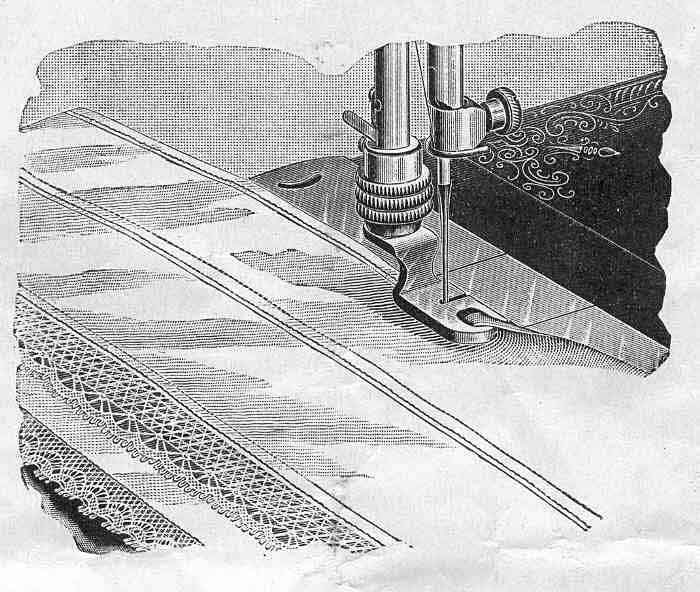
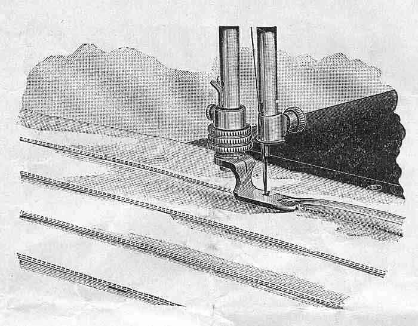
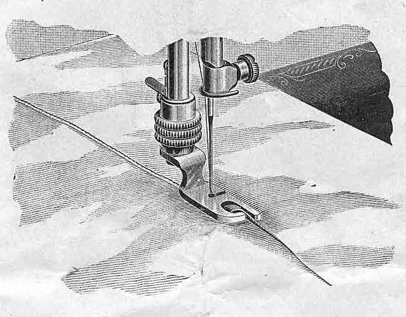
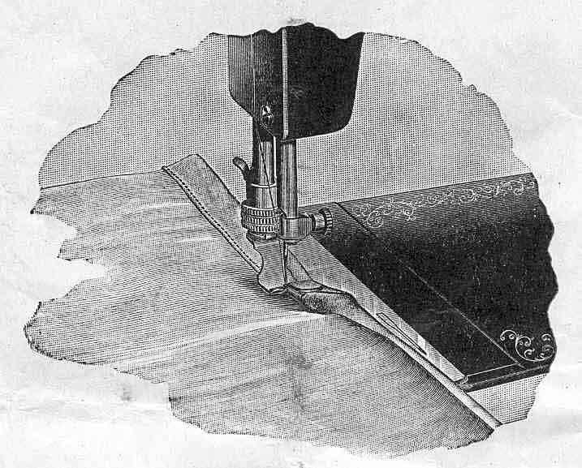
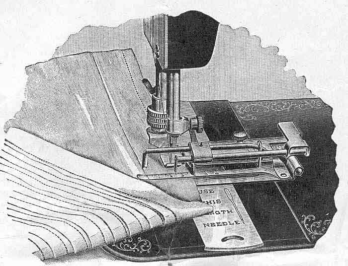
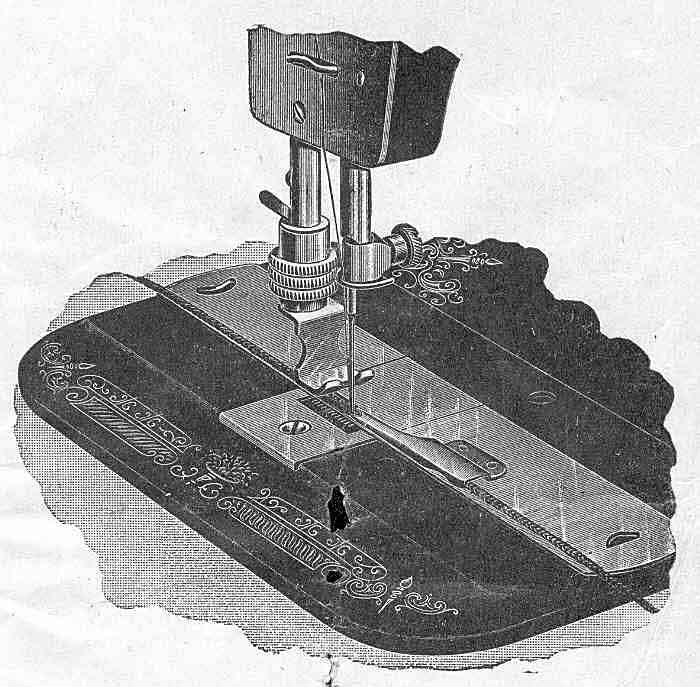
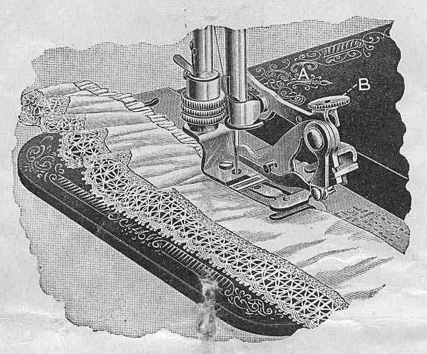

THE NEEDLEBAR
Online Manuals Section
The machine being threaded correctly above and below, as directed, raise the presser bar and raise the needle to its highest point. Place the goods under the presser foot with the needle directly over the point where you wish to begin stitching. Lower the presser foot by the presser bar lifter and start the machine by turning the hand wheel toward you. In sewing heavy or hard fabrics, greater pressure is needed on the presser foot than for light goods. The pressure is regulated by the adjusting nut on top of the presser bar. Turn this nut to the right to increase the pressure, or to the left to decrease it.
The object to be attained is to have the stitch alike on both sides of the fabric. This is accomplished by the tensions, or strain upon both threads. The tension upon both threads should be as nearly alike as possible, and tight enough only to make a smooth firm seam. If the threads are of the proper size for the material used, and both tensions right, the threads will be drawn and locked together in the center of the goods, thus:
If the upper tension is too loose (or the lower one too tight) the lower thread will lie straight along the under side of the goods, thus:
the upper thread showing in loops on the under side. On the contrary, if the upper tension is too tight (or the shuttle tension too loose), the upper thread will lie straight on the upper side of the goods, thus:
the lower thread showing in loops on the upper side.
TO TIGHTEN THE UPPER TENSION turn the tension nut to the RIGHT.
TO LOOSEN THE UPPER TENSION turn the tension nut to the LEFT.
As the shuttle tension has been set for general work when the machine leaves our hands, as before explained, any needed regulation of the stitch in this respect, should ordinarily be made by changing the upper tension.
If, however, when the upper tension is regulated so the lock is in the center of the goods, both threads appear to be loose, and the stitches and seam not smooth and firm, the shuttle tension is too loose, and should be tightened by turning the tension screw to the right; tighten the upper tension accordingly.
If the under thread cannot be properly drawn up without having the upper tension so tight that the thread breaks, or if, when the tensions are evenly balanced, the goods are "drawn" or "puckered" (this will occur only in sewing very light and "slazy" fabrics) the shuttle tension is too tight and should be loosened by turning the shuttle tension screw to the left; then loosen the upper tension to correspond.
The above particular explanation is given that every operator may fully understand the principles of the tensions.
Stop the machine with the needle at its highest point, raise the presser foot by means of the lifter at the back, place the right thumb on the tension release lever on front of arm of machine to free the upper thread and with the left hand draw the work out directly back from the needle.
Do not use inferior thread or needles. Any good thread will work well, but you must not expect to make a smooth, even stitch with cheap, rough thread, nor can you expect a machine to work well with an inferior grade of needles, made in imitation of ours. As our interest is to maintain the reputation of the machine, it is evident that we will always supply the best. If you cannot secure the right kind of needles from a dealer in your locality, send to us by mail, enclosing a money order or stamps sufficient to cover the cost and we will fill the order promptly by mail or express. When ordering, state sizes or needles desired, and give the plate number of your machine which you will find on the front shuttle race slide, directly in front of the needle.
| Size of
Needle |
Sizes of
Thread |
Class of
Work |
| Cotton |
Silk |
||
| No. 2 |
100 to 200 |
000 to 00 |
Fine Linen
and Silk |
| No. 3 |
70 to 100 |
00 to 0 |
Muslin and
Shirtings |
| No. 4 |
50 to 70 |
A and B |
Dressmaking
and General Work |
| No. 5 |
30 to 50 |
B, C and
D |
Heavy Wool
and Cotton Cloth |
| No. 6 |
Coarse |
|
Extra Heavy
Cloth |
Raise the presser foot to its highest point, unscrew the nut just above the presser foot by turning to the left, until the foot is loosened, when it can be drawn off towards you.

Attach the hemmer foot in place of the presser foot, taking care that it stands true, and straight with the feed. Raise the hemmer by means of the lifter, clip off the right hand corner of the cloth, and turn up the edge about one-fourth of an inch. Insert it in its scroll (or mouth) of the hemmer, and push it forward to the needle.
Then let the hemmer down and start the machine, gently holding back on the work to keep it smooth, allowing the edge of the goods to pass between the thumb and forefinger of the right hand while it is being hemmed, keeping the scroll of the hemmer just full, as it will leave a raw edge and make a rough and clumsy hem if there is too much turned in, and too little will not turn under.
In hemming a curve, flannel or slazy goods, draw gently on the edge being hemmed, resisting the feed, and guide the work carefully.
The stitch may be laid close to the edge of the hem, or away from it by setting the hemmer to or from the needle, by swinging the hemmer to the right or left. Practice is necessary with both hemming and felling before a neat seam can be produced.

The foot hemmer and feller is attached in place of the regular presser foot as shown above, and is the same attachment used for narrow hemming as described. If the hemmer and feller is attached it can be used in the place of the presser foot in running up the seam, the under edge of which should project about one-fourth of an inch beyond the upper, then trim off the edges, if necessary, so as to leave just seam enough to fill the feller. Open the work flat, wrong side up, and trim the corner of the seam slightly, and then push it in to the feller until it reaches the needle, lower the feller on the feed and start the machine. The feed will carry the seam without helping it, and makes a complete fell from the beginning.
The feller may be adjusted to the right or left, so as to sew close on the edge of the fell, or away from it as desired.
The illustration above shows a completed felled seam in the middle of the work.

If a wider hem is desired than can be made with any of the hemmers, proceed as follows:
Adjust the hemmer and feller as described.
Fold the cloth the width of the hem desired and place the fold to the right of the needle so that the edge of the folded part will easily enter the scroll of the hemmer and feller. Proceed as in ordinary narrow hemming, as described, taking care to keep the fold smooth by holding the edge of the fold between the thumb and fingers of the right hand.

Four widths of hemmers accompany each machine.
Fold the goods by hand the width of hem required, turning one fold only, adding about one-eighth of an inch, which will be turned under by the hemmer. Then insert the goods in the hemmer, forcing it back until the needle will catch the edge of the goods. Lower the presser foot and sew as usual. Slightly press on the goods with the two forefingers of the left hand. If more goods is required to fill the hemmer and turn the edge properly, slightly carry the goods to the right. If too much goods is taken, carry to the left.
The line of stitching can be adjusted to the edge of the hem by moving the hemmer to the right or left.

Raise the presser bar to its highest point. Remove the presser foot and attach the tucker in its place so that the needle passes down through the center of the round hole in the foot of the tucker, then fasten it securely in this position.
To regulate the size of tuck, loosen the thumb screw on top of tucker and place the gauge for any desired width, moving to the right for wide space and to the left for narrow tuck.
To regulate the space between tucks, move the marker to the left for wide space and to the right for narrow.
The figures on the scale on the back side of the tucker show the width of tuck, and those on the scale in front show the width of space.
By adjusting the two gauges so that the scale indicators will point to the same figures it will make the tucks just meet. When the above adjustments have been made, be sure and turn screw down tight.
TO COMMENCE TUCKING - Fold the cloth for the first tuck and place it beneath and under the spring lip in front of the creaser with folded edge against the gauge. Drop the presser foot and sew as usual.
The marker makes a crease in the cloth as it passes over the blade; after the first tuck is completed, fold the cloth on the crease for the required number of tucks.
Remove the presser foot and attach the bias binder in its place. The small end of the scroll of the binder should rest on the needle plate, with the upper scroll of the binder on a line with the needle.
Pass the binding through the scroll of the binder and draw it back under the needle. Place the edge of the material to be bound between the upper and lower scrolls, then lower the presser bar and sew as usual. Guide the cloth with the left hand, and let the binding glide easily through the fingers of the right hand to keep it straight. If the stitching should be too near or too far from the edge of the binding, the binder can be moved to the right or left, until exactly right. For bias binding, goods of any description can be used, and the binding should be cut seven-eighths of an inch wide, and uniform in width.
To turn a square corner when binding, stop the machine at the corner, with the needle in the goods, raise the presser foot and turn the work on the needle. Then before starting the machine tuck in the folds of the binding, using the small screw driver for that purpose.
Pass the binding through the binder and sew as usual, stitching the edges together. A double French fold may be made by folding a narrow strip of cloth and passing the raw edges through the scroll of the binder.

Remove the front race cover and slide the braider in its place, as shown above. Take off the regular presser foot and put on the special foot with two short prongs. Draw the braid through the braider tube, as shown in cut, raise the presser foot, and see that the needle passes through the center of the braid.
Use a No. 4 needle, and about 16 length of stitch. The pattern should be marked or stamped on the wrong side of the material. Place the goods on the braider and under the presser foot with the pattern side up and with the point where the braiding should begin directly under the needle. Lower the presser foot and sew as usual following the pattern.

Remove the presser foot and attach the ruffler in its place on the presser bar with the fork of the lever over the needle nut "A". Place the goods to be gathered between the steel blades or springs. If the ruffle is to be attached to a band, place the band below the lower blade.
To make a fine gather, shorten the stitch and turn the adjusting nut "B" to its highest point.
To make plaits, turn the adjusting nut "B" downward to the desired point and lengthen the stitch.
For full gathers, adjust the ruffler the same as in making plaits, using a short stitch.
The length of the stitch should match the size of the gather or plait, so the folds will lie even and not pile up on each other or be too far apart.
For shirring, remove the lower blade and put to the shirring slide in its place, pushing it in as far as it will go.
Never use the ruffler without either the ruffler or shirring plate in place. Never run the machine with the ruffler on without goods between the steel blades, as the movement of the teeth on the upper blade against the lower blade will dull the teeth and soon make the ruffler useless.